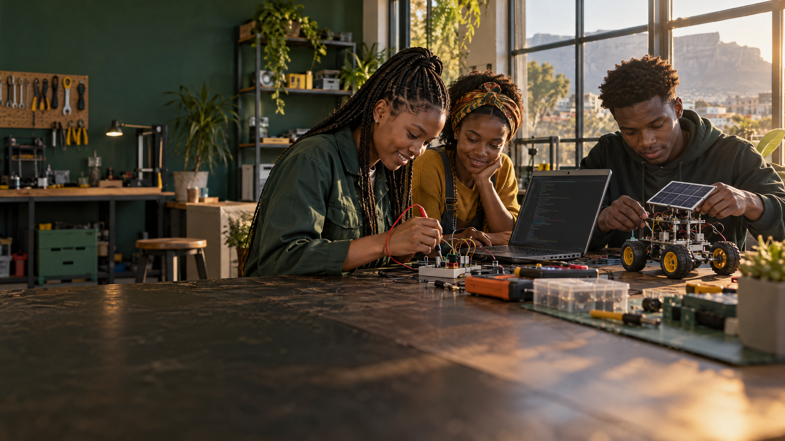

Open by design
Learning made more accessible, whatever your location or connection.
A new kind of engineering school—rooted in South Africa, with foundational learning open to everyone, and built around the skills our future needs.

We believe the people who shape tomorrow should come from everywhere—not just the places with the most resources.
That’s why we’re imagining a school that meets learners where they are: online or offline, at home or in a community, with curiosity as the starting point. Technology is how we reach people. Practical knowledge is what we’re here to build.
A school designed to growLearning made more accessible, whatever your location or connection.
Learning will be designed around practical projects and digital laboratory experiences.
Knowledge shaped by South African realities and African possibilities.
Interconnected fields for people who want to design, build, repair, and improve the systems around us.
Study areas shown are proposed. No professional engineering qualification or accreditation is implied.
To a home for ideas, skills and possibility.
We’re designing for more than a website. The long-term vision is a connected institution that begins online and grows—over time—into a place for workshops, laboratories, research and collaboration.
AN INVITATION TO IMAGINE
A school for the curious, the practical, and everyone ready to shape what comes next.